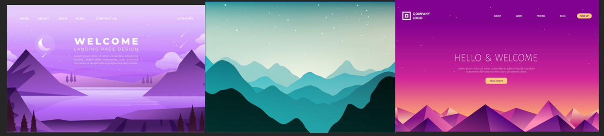

"You apply professional practice, both individually and in teams, in the areas of project organisation, communication with stakeholders, exploratory research, and reporting."
For my Portfolio I first started with doing some research about what I wanted my porfolio to look like. I searched on internet and I found some inspiration:

I liked the mountain vibes and the sunset in the background, and I liked the text in the middle. I liked how these pages were set up so I wanted to make this, but more me and I wanted to make it more special with a parallax effect.
For the first project we made a team charter together with measures and guiding principles.
Open the team charter here: PDF
I made interview questions for an interview we had with the marketing department of Fontys, we also worked this interview out in a summary. I summarized the first part of the interview and a groupmate summarized the last part. Here is the Interview.
we sent out a survey to ICT Deeltijd semester 1, so we would find out what the age would be of the people who do that study, what they studied before and how they found this study. Here are the answers of the enquête.
We also went to Fontys TQ where the ICT Deeltijd study is, and we interviewed a total of five ICT Deeltijd students about the study and how they got there. Me and a groupmate interviewed 3 students which we both also summarized. Here are those Interviews.
I learned that it's a good thing to do interviews or enquêtes with the target audience to get a clearer view of what they think of something so we can make everything we do to their interests, and don't rely on what you think is best if you're not the target audience because it will not work.
For the development project we discussed verbally who was going to do what. We didn't wrote it down, but one person was going to make the home page, one person the two year study and one person the four year study. We decided to make it in a shared VS Code document.
For the next time it is better to write down what someone is supposed to do. That way no one can be wrong in what they have to do and everything is clear.
For project X I wanted to make a writing website. I First started with making a survey and sent this to the target audience based on reviews I found on Reddit I made the questions. here is the Survey I made.
When I made this survey I learned that I could ask some questions differently. Like, I asked people if they like dark and light mode, but I could've asked if they prefered dark OR light mode so I could make one of them instead of both. and I could give a 'other' option at the question if they want different functions. But I am happy how it turned out because after all I used a lot of the answers in my survey.
I also reviewed some of the websites I found on Reddit myself. And I gave my opinion about what I liked and disliked about it in a Document.
I found it hard to give my honest opinion about these websites, but based on the reviews I read earlier it was easier because I could agree or disagree with the reviews.
I learned to give an own opinion about a website, because an opinion is never wrong and everyone has a opinion about something.
I did three usertests on the target audience so I could make iterative designs for my Figma. here are these Usertests.
I got feedback from Paul that when I did the usertests, the best thing to do is to ask the users again to do the usertest and ask them for feedback if it's improved or not. I only asked User 1 and 2 to click to my Figma and see if it was better than the last time. So next time when I am going to do usertests again, I am going to ask the users to do the test again to get more and better feedback.
Based on the team charter we made for the first project, we tried to keep the agreements we made also for the other projects. when people didn't stick to the agreements we talked with them and if this didn't work we talked with the coaches.